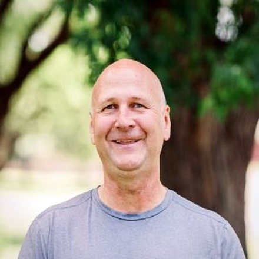
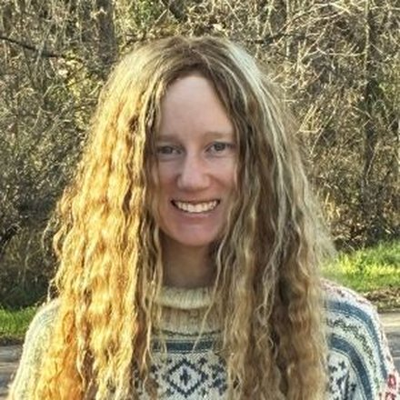
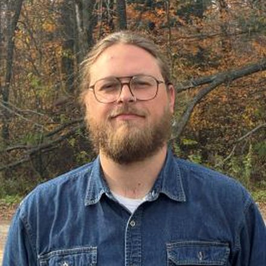
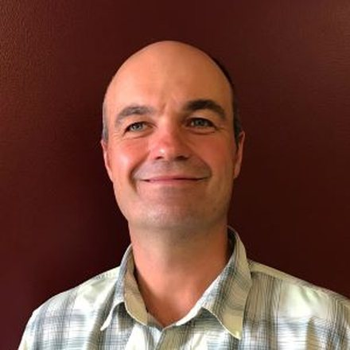
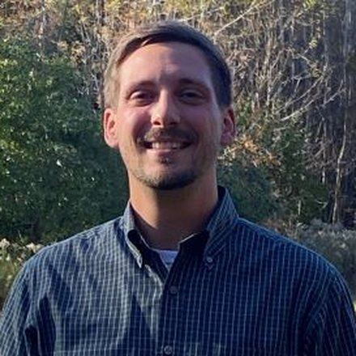

Key staff
The geologists, engineers and soil scientists who scope the work and sign the reports.
Stacy Stroud, BS
OwnerOver twenty years in environmental consulting and the owner of the firm. Responsible for managing and operating the business, including financial oversight, staff support and information technology. Leads business development and marketing, guides proposal development and assembles proposal teams by scope. Provides the final editorial review for all project deliverables.
Pete Arntsen, MS, PH, PG
Environmental scientistMore than 35 years as an environmental scientist and project manager, with the firm since 2009. Focus on contaminant-release investigations and remediations; hydrologic, geologic and hydrogeologic studies; landfill environmental studies; wetland delineation and permitting; regulatory compliance; and environmental litigation support.
Ken Ebbott, MS, PG, CGWP
GeologistThirty-plus years specialising in soil, groundwater and vapour investigation and remediation. Work includes investigation, remediation and closure of brownfield, foundry, agrichemical, petroleum and drycleaner sites, including chemical injection techniques to remove pesticides and solvents from groundwater.
Brenda Halminiak, PG, CHMM, TSSA
GeologistBachelor’s degree in geology and a licensed Professional Geologist in Wisconsin, with over 22 years in landfill monitoring, phytoremediation and hazardous waste management. Certified Hazardous Materials Manager and a Tank System Site Assessor. Formerly served on the Wisconsin Examining Board of Professional Geologists, Hydrologists and Soil Scientists.
Nichole Good, MS, PSS, TSSA
Project managerWith the firm since 2015. Background in ecosystem restoration and soil science; Professional Soil Scientist, Tank System Site Assessor and Certified Soil Tester. Manages environmental projects from first assessment through case closure, specialising in agricultural-chemical facilities.

Bart Sexton, MS, PSS
Soil scientistExtensive experience designing, specifying, coordinating and overseeing projects: environmental monitoring, reporting, remediation, earthwork including excavation and stormwater structure construction, treatment of well water and landfill leachate for PFAS, and phytoremediation of groundwater, stormwater, wastewater effluent and impacted soils.
Levi Rhody, MS, PG
GeologistWith the firm since July 2018, licensed as a Professional Geologist in Wisconsin and a Certified Asbestos Inspector. Assists with soil and groundwater remediation including excavation, engineered cap installation and phytoremediation, and conducts site investigations and landfill monitoring directed by the Wisconsin DNR.

Kelsey Bird, BS, PE
Professional engineerDiverse background in environmental consulting and field investigation: Phase I and Phase II ESAs, site investigation work plans, remedial action reports, WDNR case closure and wetland delineation reporting. Field experience spans soil, groundwater and vapour sampling, vapour mitigation systems, tank system site assessments and PFAS sampling.

Joel Gebhard
Soil scientistBachelor of Science in Forest Ecosystem Restoration and Management. Project management, soil survey, GIS, wetland delineations, plant identification, laboratory analysis and technical writing. Has led soil survey projects improving soil data for more than 625,000 acres, with fieldwork across Wisconsin, Michigan and Appalachia.

Lars Smith, BS
Environmental scientistOver 16 years in applied environmental science: investigation and remediation of soil and groundwater contamination, vapour investigations and gas extraction systems, wetland delineations and restorations, and treatment wetland support. Licensed pesticide applicator, POWTS maintainer and licensed drone pilot, working in AutoCAD and Civil 3D.
Amy Volhard, AS
Environmental technical assistantWith the firm since 2021, supporting information technology, administration, fieldwork and marketing. Skilled in preparing closure requests for contaminated sites throughout Wisconsin and in the ACCP program. Certified Asbestos Inspector.
Marcie Koziczkowski
Administrative assistantWith the firm since 2014 and more than 35 years in administration. Provides support, expertise and technical review in accounting and invoicing, and has worked closely with the Agricultural Chemical Cleanup Program.
Julie Prahl
Administrative assistantWith the firm since 2021, following more than 25 years of administrative support in the legal field. Primarily reviews, edits and finalises reports and submittals, providing technical and professional insight on reports, memorandums and letters.
Carol Teschner
Technical assistantJoined in 2014 after more than 35 years in the financial world. Aids in finalising tables and charts for reports and submittals.

Mathew Weiss, BS, PE, TSSA
Professional engineerMat Weiss has a bachelor's degree in civil engineering with a concentration in environmental and water resources engineering, and joined the firm in 2024. He is a licensed professional engineer in Wisconsin with experience in site design, specializing in stormwater management design, and previously worked as a project engineer within an air quality compliance organization. He also provides drafting and modeling support in AutoCAD Civil 3D, HydroCAD and WinSLAMM, and manages a number of landfill monitoring and agricultural-chemical projects.
Nora Stanczyk
AdministrativeJoined in 2026. Payroll processing, forms and tables, and the administrative work that keeps records accurate and deadlines met.
Talk to someone who has closed a site like yours.
Send the site address and the contaminant if you know it. We will tell you what the file needs and whether a plant-based remedy fits.